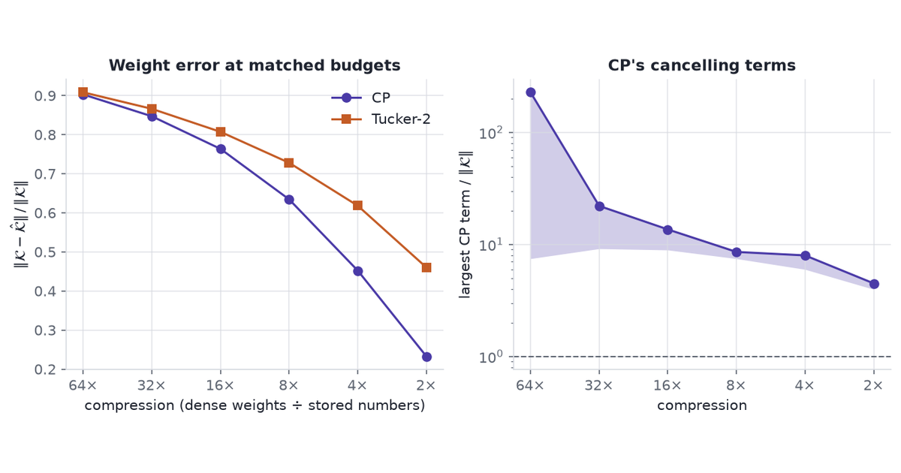
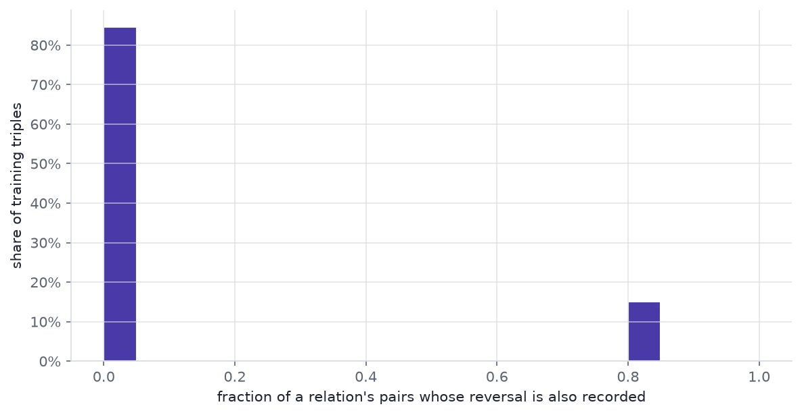
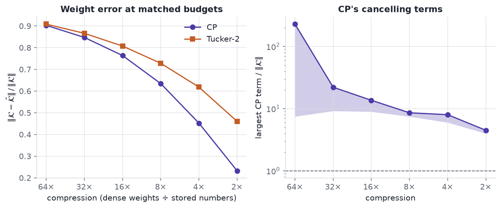

Knowledge graphs, conv kernels, and choosing the rank
Measured on FB15k-237, a trained ResNet-18 kernel and two photographs. DistMult’s symmetry rarely costs a ranking, and Tucker’s case in knowledge graphs is parameter count. CP stores a kernel or an image in about half Tucker’s numbers at the same error, but on the same image Tucker predicts hidden pixels better. A trained kernel’s HOSVD scree has no elbow, and an over-parameterised CP prunes itself to the true rank under a factor penalty.
Tensors
Linear Algebra
Deep Learning
Machine Learning
Author
Ravi Kalia
Published
September 26, 2026

CP or Tucker in Practice
CP and Tucker differ in one object, the core tensor, and the right core depends on whether the factorization has to predict entries nobody observed or store a known tensor in fewer numbers.
A knowledge-graph embedding and a compressed convolution layer are both tensor factorizations, and both literatures offer the same two families. The jobs pull apart. A knowledge-graph model has to score facts nobody recorded, and has to score (Paris, capital of, France) high while scoring (France, capital of, Paris) low. A compressed layer has to reproduce a kernel it has already seen, in fewer numbers, without making the network unstable to fine-tune. The first job asks what a core can express. The second asks what it costs.
CP or Tucker derives both models: CP’s uniqueness, Tucker’s rotational freedom, and their storage counts. Here they meet two real tensors — the FB15k-237 knowledge graph and a trained ResNet-18 kernel — then the question both leave open, which rank to fit, and then a photograph that can be asked either job. HOSVD appears as a way to fit Tucker and read off its ranks, not as a third model.
1 Notation
For an \(N\)-way tensor \(\mathcal{X}\in\mathbb{R}^{I_1\times\cdots\times I_N}\):
CP at rank \(R\). A sum of \(R\) rank-one terms, one column per mode per term:
CP is Tucker with a superdiagonal core. Set every \(R_n=R\) and zero every entry of \(\mathcal{G}\) except \(\mathcal{G}_{r r\cdots r}\). Component \(r\) of mode 1 then meets only component \(r\) of the other modes. A dense core lets any component of one mode meet any component of another.
Parameter counts. CP stores \(R\sum_n I_n\) numbers. Tucker stores \(\prod_n R_n+\sum_n I_nR_n\), and the core product is what grows fastest.
HOSVD. Take the SVD of each mode-\(n\) unfolding \(\mathcal{X}_{(n)}\), keep \(R_n\) left singular vectors as \(U^{(n)}\), and set \(\mathcal{G}=\mathcal{X}\times_1 U^{(1)\top}\cdots\times_N U^{(N)\top}\). HOOI iterates from there; tensorly’s tucker(init="svd") is HOSVD followed by HOOI.
2 Knowledge-graph completion
2.1 Tensor
Code
kg = json.loads((DATA /"fb15k237_manifest.json").read_text())rel = pd.read_csv(DATA /"fb15k237_relations.csv")n_ent, n_rel = kg["entities"], kg["relations"]n_train = kg["triples"]["train"]cells = n_ent * n_rel * n_entdensity = n_train / cellsnever = rel.reversed_fraction ==0mostly = rel.reversed_fraction >=0.5pairs = rel.train_pairs.sum()share_never = rel.train_pairs[never].sum() / pairsshare_mostly = rel.train_pairs[mostly].sum() / pairsshare_reversed = (rel.train_pairs * rel.reversed_fraction).sum() / pairsn_between =int(((rel.reversed_fraction >0.1) & (rel.reversed_fraction <0.5)).sum())assert n_between ==1# the prose says "1 relation falls"# Exposure: a pair whose object is also a subject of the relation, or whose# subject is also an object. Only then can a symmetric score put a reversed pair# ahead of a true answer in a ranking query.nv = rel[never]one_role = nv.two_role_fraction ==0n_one_role =int(one_role.sum())exposed_never = (nv.train_pairs * nv.two_role_fraction).sum() / nv.train_pairs.sum()contains = rel.set_index("relation").loc["/location/location/contains"]
FB15k-237 is the standard benchmark for this job.
Provenance. Bordes et al. (2013) cut FB15k out of Freebase, the crowd-edited knowledge base Google bought and later shut down. Toutanova and Chen (2015) removed near-duplicate and inverse relations from it, because many FB15k test triples could be answered by flipping a training triple. The copy read here is the one distributed with TuckER; src/fetch_fb15k237.py downloads it, counts it, and keeps only per-relation counts.
Shape. Subject × relation × object: a binary tensor \(\mathcal{Y}\) of shape 14,541 × 237 × 14,541, with a 1 for every recorded fact.
Size. 50,111,441,397 cells, 272,115 of them ones in training: a density of 5.4e-06. At \(10^5\) entities and \(10^3\) relations the count would be \(10^{13}\) cells.
What a wrong answer costs. A model that cannot tell a fact from its reversal ranks (Paris, contains, France) as high as (France, contains, Paris), and every downstream query inherits the error.
The question to ask of the data is how often a relation’s reversal is also a fact.
207 of the 237 relations — carrying 81% of the training triples — never contain a reversed pair \((o,s)\) alongside \((s,o)\).
24 relations have reversals for at least half their pairs. They are the symmetric ones: siblings, cast members of the same season, combatants in the same war.
Only 1 relation falls between 10% and 50%. A relation is either directional or symmetric, almost never partly both.
Over the training set, 12.5% of triples have their reversal recorded.
Code
fig, ax = plt.subplots()ax.hist( rel.reversed_fraction, bins=np.linspace(0, 1, 21), weights=rel.train_pairs / pairs, color=ACCENT, edgecolor="white",)ax.set_xlabel("fraction of a relation's pairs whose reversal is also recorded")ax.set_ylabel("share of training triples")ax.yaxis.set_major_formatter(plt.FuncFormatter(lambda v, _: f"{v:.0%}"))plt.tight_layout()plt.show()

Figure 1: Per-relation fraction of FB15k-237 training pairs \((s,o)\) whose reversal \((o,s)\) is also a training triple, weighted by how many triples the relation carries.
2.2 Scoring functions as cores
Every model in this family scores a triple \((s,r,o)\) as a multilinear form in three embeddings, \(e_s\), \(w_r\) and \(e_o\). The core decides which coordinates may meet.
DistMult (Yang et al. 2015): superdiagonal core, one entity matrix for both subject and object.
The sum is unchanged when \(s\) and \(o\) swap, for every relation. On FB15k-237 that gives every fact in the 207 never-reversed relations the same score as its reversal. The score only costs a ranking when an entity plays both roles in one relation, though, since only then does a reversed pair compete with a true answer. In 173 of those 207 relations no entity does, and across all of them 3.0% of pairs are exposed. Hierarchies are where it bites: a city contains districts and is contained by a country. /location/location/contains is never reversed, and 80% of its 5,201 pairs are exposed.
CP with untied entities: superdiagonal core, separate subject matrix \(A\) and object matrix \(C\).
This is asymmetric. Its weakness is different: \(a_s\) and \(c_s\) share nothing, so what the model learns about Paris as a subject says nothing about Paris as an object. Lacroix et al. (2018) fix that by also training on the reciprocal triple \((o,r^{-1},s)\), which puts every entity in both roles.
ComplEx (Trouillon et al. 2016): superdiagonal core over complex embeddings, tied entities, \(\phi=\operatorname{Re}\sum_k e_{s,k}w_{r,k}\bar e_{o,k}\). The conjugate breaks the symmetry.
RESCAL (Nickel et al. 2011): one full \(d_e\times d_e\) matrix \(M_r\) per relation, \(\phi=e_s^\top M_re_o\). That is Tucker-2: entity modes compressed, relation mode left at full length, core \(=\) the stack of \(M_r\).
TuckER (Balažević et al. 2019): a dense core \(\mathcal{G}\in\mathbb{R}^{d_e\times d_r\times d_e}\) shared by every relation, and tied entities.
Each relation’s matrix \(M_r=\mathcal{G}\times_2 w_r\) is a mix of \(d_r\) shared slices. Tied entities keep one vector per entity, as in DistMult. The asymmetry comes from the core: nothing forces a slice of \(\mathcal{G}\) to be a symmetric matrix.
TuckER’s paper shows that “RESCAL, DistMult, ComplEx and SimplE are special cases of TuckER”: each is a TuckER core with a constraint. The choice is which constraint to pay for.
2.3 Loss
The tensor is almost all unobserved, and unobserved is not false. Least squares over every cell treats each missing triple as a known zero, and all but 5.4 in every million of its terms are those zeros. The benchmark scores rank, not reconstruction.
Binary cross-entropy with 1-N scoring (TuckER): score \((s,r,\cdot)\) against every entity at once, with target 1 for the recorded objects, 0 elsewhere, and label smoothing of 0.1.
Softmax cross-entropy over entities (Lacroix et al. 2018): the recorded object must win against all others.
BPR (Rendle et al. 2009), for implicit feedback: a pairwise ranking loss, \(-\log\sigma\big(\phi(s,r,o)-\phi(s,r,o')\big)\) for a recorded \(o\) and a sampled unrecorded \(o'\). It suits user × item × context recommender tensors, where the only signal is what was clicked.
2.4 Published results
Code
recip =2* n_rel # both papers also train on reciprocal relationssizes = {# model: (entity numbers per entity, relation numbers per relation, core)"CP-N3, rank 4000": (2*4000, 4000, 0), # separate subject and object tables"ComplEx-N3, rank 2000": (2*2000, 2*2000, 0), # real and imaginary parts"TuckER, $d_e=d_r=200$": (200, 200, 200**3),}params = { name: n_ent * per_ent + recip * per_rel + corefor name, (per_ent, per_rel, core) in sizes.items()}cp_n3, complex_n3, tucker_kg = params.values()per_entity = {name: per_ent for name, (per_ent, _, _) in sizes.items()}md_table( pd.DataFrame( {"Model": ["DistMult","ComplEx","RESCAL","CP-N3","ComplEx-N3","TuckER", ],"Core": ["superdiagonal","superdiagonal, complex","full matrix per relation","superdiagonal","superdiagonal, complex","dense, shared", ],"Entities": ["tied", "tied", "tied", "untied", "tied", "tied"],"Numbers per entity": ["", "", "", *(f"{n:,}"for n in per_entity.values())],"Parameters": ["", "", "", millions(cp_n3), millions(complex_n3), millions(tucker_kg)],"FB15k-237 MRR": ["0.343", "0.348", "0.356", "0.36", "0.37", "0.358"],"Source": ["Ruffinelli et al. 2020","Ruffinelli et al. 2020","Ruffinelli et al. 2020","Lacroix et al. 2018","Lacroix et al. 2018","Balažević et al. 2019", ], } ))
Model
Core
Entities
Numbers per entity
Parameters
FB15k-237 MRR
Source
DistMult
superdiagonal
tied
0.343
Ruffinelli et al. 2020
ComplEx
superdiagonal, complex
tied
0.348
Ruffinelli et al. 2020
RESCAL
full matrix per relation
tied
0.356
Ruffinelli et al. 2020
CP-N3
superdiagonal
untied
8,000
118.2M
0.36
Lacroix et al. 2018
ComplEx-N3
superdiagonal, complex
tied
4,000
60.1M
0.37
Lacroix et al. 2018
TuckER
dense, shared
tied
200
11.0M
0.358
Balažević et al. 2019
MRR is mean reciprocal rank of the true entity; higher is better. Parameter counts are computed from each paper’s published embedding sizes and FB15k-237’s 14,541 entities and 474 relations with reciprocals. The Ruffinelli et al. rows come from a common hyperparameter search in LibKGE, where sizes vary by model, so they carry no count.
Symmetry costs less than the algebra suggests. DistMult reaches 0.343 once tuned. TuckER’s own table lists it at 0.241, so the training recipe moved one model by about 0.10 MRR, more than the spread between all six rows. The exposure count shows why it costs so little: on this benchmark the symmetry rarely gets the chance.
Untied CP is not symmetric, and ties TuckER on MRR. CP-N3 reaches 0.36 against TuckER’s 0.358.
Tucker’s case is size. At the published settings TuckER matches CP-N3 with 11× fewer parameters and ComplEx-N3 with 5.5× fewer. Entity tables dominate every count, and TuckER stores 200 numbers per entity against CP-N3’s 8,000. At \(10^5\) entities that is \(2\times10^7\) numbers against \(8\times10^8\).
The relation dimension is a separate dial. TuckER sets \(d_r=30\) against \(d_e=200\) on WN18RR, which has 11 relations. CP and ComplEx force one rank on every mode.
Sharing is TuckER’s argument, not a measurement here. Its authors describe the shared core as multi-task learning across relations, which should help relations with few triples. None of the published tables isolates that effect.
The ranking this supports:
Rule out DistMult when entities play both roles in asymmetric relations — containment, parenthood, citation.
Choose a Tucker core when entity count or memory is the constraint.
Treat the MRR gap between CP-N3, ComplEx-N3 and TuckER as noise next to the training recipe.
Provenance.layer3.1.conv2.weight from ResNet-18 (He et al. 2016), in the ImageNet weights torchvision ships as IMAGENET1K_V1 (resnet18-f37072fd.pth). src/fetch_kernel.py pulls the one layer and caches it.
Shape. Out-channels × in-channels × height × width = 256 × 256 × 3 × 3, 589,824 weights, stride 1. ResNets repeat this shape: layer 3 of ResNet-18 has three such kernels.
What is asked of it. How many numbers CP and Tucker-2 need to reach a given weight error, and whether the fitted terms stay well-behaved.
What a wrong answer costs. A factorization that fits the weights badly needs long fine-tuning to recover accuracy. One that fits them unstably may not fine-tune at all.
A trained kernel is the right test because it carries whatever structure training gave it. A random tensor of the same shape would have none.
3.2 CP as four convolutions
Write the rank-\(R\) CP of the kernel with one factor matrix per mode:
The sequence stores \(R(256+3+3+256)=518R\) numbers, and at stride 1 it does that many multiply-adds per output pixel. Uses of Tensor Factorizations walks through this chain on a synthetic kernel. Here it runs on the real one, next to Tucker-2.
The check feeds a random batch through the four-layer chain and through one 3×3 conv whose kernel is the CP reconstruction. The largest output difference is 8.6e-06 on outputs of size up to 5.2: float32 rounding. The chain holds 18,648 weights, the formula’s 518 × 36. The check tests the wiring, not the approximation.
3.3 Tucker-2
Tucker-2 compresses only the two channel modes and keeps the 3×3 spatial modes whole (Kim et al. 2016):
It stores \(256R_i+256R_o+9R_oR_i\) numbers. Kim et al. leave the spatial modes alone because they “are already quite small”: a length-3 mode has little to give.
At \((R_o,R_i)=(40,43)\) the chain holds 36,728 weights and matches its reconstruction to 8.6e-06.
3.4 Matched budgets
“Tucker’s core caps compression” is arithmetic before it is a measurement. At equal rank, Tucker-2 costs \(512R+9R^2\) against CP’s \(518R\), so the quadratic core term wins early. CP stops compressing at all only past \(R\approx1139\), square Tucker-2 past \(R\approx229\).
Equal rank is the wrong comparison, though: the two models fit the kernel to different errors. The fair one fixes a parameter budget and asks which fits better.
Budgets. 64, 32, 16, 8, 4 and 2 times fewer numbers than the dense kernel.
CP. The rank that meets each budget, fitted by ALS with line search, 1000 iterations, three random starts.
Tucker-2. Every \((R_o,R_i)\) whose count stays within CP’s at that budget — \(R_o\) in steps of 4, then every \(R_o\) within 3 of the best — fitted by HOOI from HOSVD. The best pair is kept, so Tucker-2 never gets more numbers than CP.
Degeneracy tell. For CP, the largest rank-one term’s Frobenius norm divided by \(\|\mathcal{K}\|\). A term many times larger than the tensor it helps build is cancelling against another one. Tucker-2’s orthonormal factors keep its core’s norm at or below \(\|\mathcal{K}\|\).
src/sweep.py runs the sweep and caches it; the fits take minutes each at the larger ranks.
Code
cp_runs = pd.concat(pd.read_csv(p) for p insorted(DATA.glob("sweep_cp_seed*.csv")))t2_runs = pd.read_csv(DATA /"sweep_tucker2.csv")cp_sum = ( cp_runs.groupby("ratio") .agg( rank=("rank", "first"), params=("params", "first"), lo=("rel_error", "min"), hi=("rel_error", "max"), norm_lo=("max_component_norm", "min"), norm_hi=("max_component_norm", "max"), seeds=("seed", "nunique"), ) .sort_index(ascending=False))t2_best = ( t2_runs.loc[t2_runs.groupby("ratio").rel_error.idxmin()] .set_index("ratio") .sort_index(ascending=False))ratios = cp_sum.index.to_numpy()gap = t2_best.rel_error.loc[ratios] - cp_sum.hicp_wins =bool((gap >0).all())assert cp_wins, "the prose says CP wins at every budget"spread = (cp_sum.hi - cp_sum.lo).max()tail = cp_runs.tail_improvement.max()def span(lo, hi, fmt):"""One value when the two ends agree at this precision, else a range.""" a, b =format(lo, fmt), format(hi, fmt)return a if a == b elsef"{a}–{b}"def cp_err(r):return span(cp_sum.lo[r], cp_sum.hi[r], ".3f")def t2_err(r):returnf"{t2_best.rel_error[r]:.3f}"md_table( pd.DataFrame( {"Compression": [f"{r}×"for r in ratios],"CP rank": cp_sum["rank"].to_numpy(),"CP numbers": [f"{n:,}"for n in cp_sum.params],"CP error (range)": [span(a, b, ".3f") for a, b inzip(cp_sum.lo, cp_sum.hi)],"CP largest term / ‖K‖": [ span(a, b, ".1f") for a, b inzip(cp_sum.norm_lo, cp_sum.norm_hi) ],"Tucker-2 $(R_o,R_i)$": [f"({o}, {i})"for o, i inzip(t2_best.r_out.loc[ratios], t2_best.r_in.loc[ratios]) ],"Tucker-2 numbers": [f"{n:,}"for n in t2_best.params.loc[ratios]],"Tucker-2 error": [f"{e:.3f}"for e in t2_best.rel_error.loc[ratios]], } ))
Compression
CP rank
CP numbers
CP error (range)
CP largest term / ‖K‖
Tucker-2 \((R_o,R_i)\)
Tucker-2 numbers
Tucker-2 error
64×
18
9,324
0.903–0.904
7.5–227.8
(15, 14)
9,314
0.908
32×
36
18,648
0.847
9.2–22.1
(25, 25)
18,425
0.866
16×
71
36,778
0.764
8.9–13.6
(40, 43)
36,728
0.807
8×
142
73,556
0.634–0.635
7.5–8.6
(60, 73)
73,468
0.728
4×
285
147,630
0.452
6.0–8.0
(99, 106)
146,926
0.618
2×
569
294,742
0.233–0.234
4.0–4.5
(145, 165)
294,685
0.460
Code
fig, (ax, bx) = plt.subplots(1, 2, figsize=(9, 3.8))ax.fill_between(ratios, cp_sum.lo, cp_sum.hi, color=ACCENT, alpha=0.25, lw=0)ax.plot(ratios, cp_sum.lo, "o-", color=ACCENT, label="CP")ax.plot(ratios, t2_best.rel_error.loc[ratios], "s-", color=CORAL, label="Tucker-2")ax.set_xscale("log", base=2)ax.set_xticks(ratios, [f"{r}×"for r in ratios])ax.invert_xaxis()ax.set_xlabel("compression (dense weights ÷ stored numbers)")ax.set_ylabel(r"$\|\mathcal{K}-\hat{\mathcal{K}}\|\,/\,\|\mathcal{K}\|$")ax.legend(frameon=False)ax.set_title("Weight error at matched budgets")bx.fill_between(ratios, cp_sum.norm_lo, cp_sum.norm_hi, color=ACCENT, alpha=0.25, lw=0)bx.plot(ratios, cp_sum.norm_hi, "o-", color=ACCENT)bx.axhline(1, color=MUTED, ls="--", lw=1)bx.set_yscale("log")bx.set_xscale("log", base=2)bx.set_xticks(ratios, [f"{r}×"for r in ratios])bx.invert_xaxis()bx.set_xlabel("compression")bx.set_ylabel(r"largest CP term $/\ \|\mathcal{K}\|$")bx.set_title("CP's cancelling terms")plt.tight_layout()plt.show()

Figure 2: Left: relative Frobenius error of the ResNet-18 kernel against compression ratio, for CP (band: three random starts) and the best Tucker-2 rank pair at each budget. Right: CP’s largest rank-one term relative to the kernel’s norm, on a log scale; the dashed line marks the kernel’s own norm.
CP fits the kernel more closely than Tucker-2 at every budget.
At 8× compression CP’s error is 0.634–0.635 against Tucker-2’s 0.728. At 4× it is 0.452 against 0.618.
CP at 4× is about as close to the kernel as Tucker-2 at 2×: 0.452 against 0.460. Tucker-2 needs about twice the numbers for the same error.
The three CP starts agree to within 0.0012 at every budget, so the gap is not a lucky seed.
CP’s error was still falling at 1,000 iterations, by up to 5.5e-04 over the last tenth of them. ALS with line search never raises the error, so more iterations could only widen the gap.
The price is in the right panel. At every budget CP’s largest term is between 4.0 and 228 times the norm of the kernel it helps approximate. CP reaches its low error by adding large terms that nearly cancel: the degeneracy CP or Tucker warns about, and what Phan et al. (2020) found in conv kernels generally. A 1% change to one factor of a term 6 times the kernel’s norm moves the kernel by 6% of its norm: the fine-tuning instability Lebedev et al. report.
CP or Tucker notes that storage separates the two only at fixed error. On this kernel, at fixed error, CP needs about half the numbers, and gets them by cancellation rather than because the kernel is a short sum of rank-one terms.
Choose CP when the compression ratio is the target and the pipeline controls degeneracy: a norm penalty, Phan et al.’s stability term, a low fine-tuning learning rate, or frozen inserted layers, as Lebedev et al. suggest.
Choose Tucker-2 when a well-conditioned start for fine-tuning matters more than the last factor of two in storage.
4 Rank selection
4.1 HOSVD scree
HOSVD gives one singular-value spectrum per mode. A scree plot reads the rank off each one.
Unfold \(\mathcal{K}\) along mode \(n\) into a \(I_n\times\prod_{m\ne n}I_m\) matrix.
Take its singular values \(\sigma_{n,1}\ge\sigma_{n,2}\ge\cdots\).
Plot them, and the retained energy \(E_n(R)=\sum_{i\le R}\sigma_{n,i}^2/\sum_i\sigma_{n,i}^2\).
Pick \(R_n\) at the elbow, where the spectrum drops to a floor.
The truncation error is bounded by the energy thrown away (De Lathauwer et al. 2000):
spectra = {n: torch.linalg.svdvals(torch.tensor(tl.unfold(K, n))) for n inrange(4)}energy = {n: s.square().cumsum(0) / s.square().sum() for n, s in spectra.items()}def rank_at(n, share):"""Smallest R_n whose retained energy reaches the share."""returnint(torch.searchsorted(energy[n], torch.tensor(share, dtype=energy[n].dtype))) +1
Code
r90 = (rank_at(0, 0.90), rank_at(1, 0.90))r95 = (rank_at(0, 0.95), rank_at(1, 0.95))r50 = (rank_at(0, 0.50), rank_at(1, 0.50))def t2_cost(ro, ri):return C_out * ro + C_in * ri + kh * kw * ro * ri# HOSVD truncation at the 90% ranks, against the bound that guarantees it.U0 = np.linalg.svd(tl.unfold(K, 0), full_matrices=False)[0][:, : r90[0]]U1 = np.linalg.svd(tl.unfold(K, 1), full_matrices=False)[0][:, : r90[1]]K_90 = tl.tenalg.multi_mode_dot(K, [U0 @ U0.T, U1 @ U1.T], modes=[0, 1])err_90 = np.linalg.norm(K - K_90) / K_normlost =sum(1- energy[n][r -1].item() for n, r inzip((0, 1), r90))bound_90 = np.sqrt(lost)assert rank_at(2, 0.9) == rank_at(3, 0.9) # the prose treats the spatial modes as one
Figure 3: HOSVD spectra of the ResNet-18 kernel’s two channel modes. Left: singular values divided by the largest, log scale. Right: retained energy against rank, with 90% and 95% marked.
The kernel’s spectra have no elbow.
Past the first few values, both channel spectra fall smoothly all the way to index
No index separates structure from a floor.
Half the energy needs \((R_o,R_i)=\) (46, 51). 90% needs (165, 177), and 95% needs (199, 209).
At the 90% ranks Tucker-2 stores 350,397 numbers, a compression of 1.68×. The truncation error is 0.417, inside the bound’s 0.445.
Both spatial modes need 3 of their 3 slices for 90%. That is Kim et al.’s reason for leaving them whole, measured.
A scree finds a rank when the tensor has one: a low-rank signal above a noise floor. A trained kernel spreads its energy over most of its channels, so the scree becomes an energy budget, and the budget is a guess about accuracy after fine-tuning. Kim et al. pick Tucker-2 ranks with global analytic VBMF (variational Bayesian matrix factorization) on the two channel unfoldings instead, which sets the rank from a noise model rather than a threshold.
On the knowledge-graph tensor a scree says nothing. Its mode-1 unfolding is 14,541 × 3,446,217, and its zeros are missing entries, not measured ones. Ranks there come from validation MRR.
4.2 Over-parameterise and prune
Grid search does not scale to these models. Tucker-2 on this kernel alone has \(256^2=65{,}536\) rank pairs, a full four-mode Tucker adds two more dials, and one CP-ALS start at rank 285 took about 9 minutes here. The alternative is one fit with too many components and a penalty that switches whole components off.
4.2.1 Scale freedom
CP has a scale freedom. Multiply the mode-\(n\) column of term \(r\) by \(c_n>0\), with \(\prod_n c_n=1\), and the fit does not change. A penalty on the factors is therefore minimised over that freedom, and the AM–GM inequality says what it becomes:
with equality when the \(N\) norms are equal. Here \(\lambda_r\) is the Frobenius norm of term \(r\)’s rank-one tensor.
Group lasso — the L2 norm of every column — charges term \(r\) exactly \(N\lambda_r^{1/N}\) at a balanced point. At \(N=3\) that is a cube root: steepest at zero, so small terms are pushed all the way to zero.
Elementwise L1 gives the same bound in L1 norms. Since \(\prod_n\|a^{(n)}_r\|_1=\|a^{(1)}_r\circ\cdots\circ a^{(N)}_r\|_1\), it charges \(N\|\mathcal{T}_r\|_1^{1/N}\) for term \(\mathcal{T}_r\), and it also zeroes entries inside the terms that survive.
Weight decay — squared L2 — gives \(N\lambda_r^{2/N}\). For a matrix (\(N=2\)) that is the nuclear norm. From \(N=3\) on, the exponent is below one, so plain weight decay prunes terms too.
Lacroix et al.’s N3 penalty, \(\sum_n\|a^{(n)}_r\|_3^3\), is the same construction with the exponent chosen so that at \(N=3\) it charges \(3\prod_n\|a^{(n)}_r\|_3\): linear in term size, a tensor nuclear norm.
Every local minimum is balanced — otherwise rescaling would lower the penalty at no cost to the fit — so the bound is met there. An optimiser’s iterates need not be balanced, so the fits here rebalance after every step.
Tucker has no such reduction. Its freedom is an invertible matrix per mode, \(U^{(n)}\to U^{(n)}Q_n\) with \(\mathcal{G}\to\mathcal{G}\times_nQ_n^{-1}\), not a scale per term. Group penalties on factor columns and the matching core slices are used for Tucker, without the same one-line guarantee.
4.2.2 Proximal steps
A gradient step never lands on zero. Proximal gradient descent takes a gradient step on the fit, then applies the penalty’s proximal map, which can.
Group lasso: \(a\leftarrow a\,\max\big(0,\,1-\eta\mu/\|a\|_2\big)\) for step \(\eta\) and strength \(\mu\) — a whole column at once.
L1: soft-threshold each entry by \(\eta\mu\).
Weight decay has no zeroing map. Its terms decay toward zero, and a term counts as gone once \(\lambda_r<10^{-6}\) on a unit-norm tensor.
Adding any of the three penalties to the loss and running Adam gives no zeroing map either, so it needs the same threshold on \(\lambda_r\) after training.
The two maps and the rebalancing step, as src/prune.py defines them:
def prox(factors, kind, step, strength):"""Proximal map of the non-smooth penalties; weight decay stays in the gradient."""if kind =="group":return [ f * (1- step * strength / f.norm(dim=0).clamp_min(1e-300)).clamp(min=0)for f in factors ]if kind =="l1":return [f.sign() * (f.abs() - step * strength).clamp(min=0) for f in factors]return factorsdef rebalance(factors, kind):"""Rescale each component's columns to equal norm; the product is unchanged. A component with one all-zero column is zero already, so every column of it is zeroed. Rescaling it instead would leave its other columns near 1e-100, and arithmetic on numbers that small is slow. """ p =1if kind =="l1"else2 norms = torch.stack([f.norm(p=p, dim=0) for f in factors]) dead = (norms ==0).any(0) norms = norms.clamp_min(1e-300) target = norms.log().mean(0).exp().masked_fill(dead, 0.0)return [f * (target / n) for f, n inzip(factors, norms)]
4.2.3 Test tensor
The test tensor is synthetic, because grading a rank needs the true one.
Generating process. Six rank-one terms with Gaussian factors on a 60 × 50 × 40 grid, scaled to unit norm, plus Gaussian noise of norm 0.1 — a signal-to-noise ratio of 20 dB.
What it stands in for. A tensor whose rank is unknown and whose noise floor is real: a ratings cube, a sensor array, a batch of spectra.
The fit. Rank 30, five times too many, from a small random start, 4,000 proximal steps with backtracking.
Seeds. Five; a seed changes both the tensor and the start.
Sweep. Seven strengths per penalty, from \(10^{-5}\) to \(10^{-2}\), plus an unpenalised fit with the same rebalancing. src/prune.py runs it and caches it.
Code
clean, noisy, start = prune.make_problem(0)demo_mu =3e-4demo = prune.fit(noisy, start, "group", demo_mu)demo_lam = np.sort(prune.component_weights(demo).numpy())[::-1]demo_alive =int((demo_lam > prune.ALIVE).sum())demo_zero =int((demo_lam ==0).sum())demo_err = (clean - prune.cp_tensor(demo)).norm().item()wd = prune.fit(noisy, start, "wd", 1e-3)wd_lam = np.sort(prune.component_weights(wd).numpy())[::-1]wd_alive =int((wd_lam > prune.ALIVE).sum())wd_dead = wd_lam[wd_alive]# The prose reads these outcomes; fail the render if a rerun changes them.assert demo_alive == wd_alive == prune.TRUE_RANKassert demo_zero == prune.FIT_RANK - demo_alive and wd_dead >0
One group-lasso fit at strength \(\mu\) = 0.0003 on seed 0 keeps 6 of 30 terms. Their weights run from 0.471 down to 0.329, and the other 24 are exactly zero. The fit sits 0.0086 from the noiseless tensor. Weight decay at \(\mu=10^{-3}\) on the same seed also keeps 6, but its largest discarded term is 4e-24, small rather than zero.
Code
runs = pd.concat(pd.read_csv(p) for p insorted(DATA.glob("prune_*.csv")))names = {"none": "none", "group": "group lasso", "l1": "elementwise L1", "wd": "weight decay"}summary = ( runs.groupby(["kind", "strength"]) .agg( lo=("alive", "min"), hi=("alive", "max"), err=("error_to_truth", "median"), ) .reset_index())baseline = summary[summary.kind =="none"].iloc[0]exact = summary[(summary.lo ==6) & (summary.hi ==6)]window = { k: (g.strength.min(), g.strength.max(), g.err.min()) for k, g in exact.groupby("kind")}too_strong = { k: g.sort_values("strength").iloc[0]for k, g in summary[(summary.kind !="none") & (summary.lo < prune.TRUE_RANK)].groupby("kind")}# The prose names these outcomes; fail the render if a rerun changes them.assertset(window) == {"group", "l1", "wd"}assertset(too_strong) == {"group", "l1"}def mu(k, end):returnf"{window[k][end]:g}"wide = summary[summary.kind !="none"].copy()wide["cell"] = [ (f"{lo}"if lo == hi elsef"{lo}–{hi}") +f" · {e:.4f}"for lo, hi, e inzip(wide.lo, wide.hi, wide.err)]grid = wide.pivot(index="strength", columns="kind", values="cell")[["group", "l1", "wd"]]grid.columns = [names[c] for c in grid.columns]grid.insert(0, "strength $\\mu$", [f"{m:g}"for m in grid.index])md_table(grid)
strength \(\mu\)
group lasso
elementwise L1
weight decay
1e-05
30 · 0.0222
12–21 · 0.0097
30 · 0.0231
3e-05
27–29 · 0.0165
6–7 · 0.0086
30 · 0.0221
0.0001
6–8 · 0.0088
6 · 0.0094
30 · 0.0174
0.0003
6 · 0.0086
6 · 0.0154
7–10 · 0.0087
0.001
6 · 0.0095
5–6 · 0.3156
6 · 0.0107
0.003
6 · 0.0164
0–1 · 1.0000
6 · 0.0220
0.01
0–3 · 0.7998
0 · 1.0000
6 · 0.0690
Each cell gives the terms left across five seeds (a range where seeds disagree) and the median distance to the noiseless tensor. Without a penalty all 30 terms survive and the fit sits 0.0232 from the truth, because the spare terms fit noise.
All three penalties find the rank. Each has a range of strengths that leaves exactly six terms on all five seeds: group lasso from 0.0003 to 0.003, elementwise L1 from 0.0001 to 0.0003, and weight decay from 0.001 to 0.01.
Pruning also denoises. At its best strength, each penalty lands closer to the noiseless tensor than the unpenalised fit: 0.0086, 0.0094 and 0.0107 against 0.0232. The spare terms were fitting noise.
Too weak keeps spares; too strong cuts true terms. Group lasso at 0.01 and L1 at 0.001 drop below six on some seeds, and the median distance to the truth jumps to 0.80 and 0.32. Weight decay still keeps six at the top of the grid.
Inside the range the penalty still shrinks the survivors, so the error climbs toward the top of it. Refitting at the found rank with no penalty removes that shrinkage; it is the usual last step, and not measured here.
Weight decay prunes without a zeroing map, as the \(\lambda_r^{2/3}\) bound predicts for three modes.
The range moves with the penalty’s scale and with the noise, so on a real tensor it is found against held-out entries: one sweep over a single strength in place of one over ranks.
5 Image: both jobs on one tensor
The knowledge graph only asks for prediction and the kernel only asks for compression. A photograph can be asked either, so it separates the two choices on one tensor: the same fold, the same models, two different answers for which ranks are best.
5.1 Tensor
Code
import image as imastro = im.crop(im.astronaut())china = im.crop(im.china())X_img = im.fold(astro)Y_img = im.fold(china)img_dense = X_img.sizeimg_energy = { n: np.cumsum(s**2) / np.sum(s**2)for n, s in ( (n, np.linalg.svd(tl.unfold(X_img, n), compute_uv=False)) for n inrange(4) )}img_r999 = [int(np.searchsorted(img_energy[n], 0.999)) +1for n inrange(4)]
Provenance. The first image is scikit-image’s astronaut: NASA’s portrait of Eileen Collins, public domain. The second is scikit-learn’s china.jpg, a photograph of a temple by danielbuechele on Flickr, licensed CC BY 2.0. Both ship inside the Python packages, so the render reads no network.
Fold. Cut the image into 8 × 8 blocks, the block size JPEG uses, and index a pixel by block row, block column, position within the block and colour. The astronaut becomes a 64 × 64 × 64 × 3 tensor of 786,432 entries. The temple, cropped to a multiple of 8, becomes 53 × 80 × 64 × 3.
Why these four modes. Block rows and block columns carry the layout of this particular picture. The within-block mode carries texture every block shares, and colour carries three channels. The last two describe photographs in general, which is what lets them move to a second image.
Spectra. Keeping 99.9% of the energy needs 57, 58, 28 and 3 components of the four modes’ 64, 64, 64, 3. Only the within-block mode compresses easily.
What a wrong answer costs. A compressed image below the quality bar shows blocks and blur. A completion tuned on the pixels it was fitted to fills the holes with noise.
5.2 Compression
Every pixel is fitted, and the question is the smallest model that is good enough.
Threshold. PSNR of at least 30 dB against the original on every seed. The floor is a choice, and the sweep shows what a different one would cost.
CP. Ranks from 25 to 600, three random starts each, 300 ALS iterations with line search.
Tucker. Every \((R,R,R_p,R_c)\) on a grid of 192, with \(R\) shared by block rows and columns, fitted by HOOI from HOSVD.
Storage.\(195R\) numbers for CP; \(\prod_n R_n+64(2R+R_p)+3R_c\) for Tucker. src/image.py runs the sweeps and caches them.
Code
squeeze_runs = pd.read_csv(DATA /"image_compress.csv")squeeze = im.choose_compression(squeeze_runs)sq_cp, sq_tk = squeeze["cp"], squeeze["tucker"]cp_curve = ( squeeze_runs[squeeze_runs.model =="cp"] .groupby("rank") .agg(storage=("storage", "first"), lo=("psnr", "min"), hi=("psnr", "max")))# Rank tuples that store at least as many numbers as the dense tensor do not compress.tk_runs = squeeze_runs[ (squeeze_runs.model =="tucker") & (squeeze_runs.storage < img_dense)].sort_values("storage")tk_front = tk_runs[tk_runs.psnr == tk_runs.psnr.cummax()]# The same comparison at other thresholds, wherever both families clear it.sq_ratio = {}for target in (25.0, 27.5, 30.0, 32.5, 35.0): picks = im.choose_compression(squeeze_runs, target)if {"cp", "tucker"} <=set(picks): sq_ratio[target] = picks["tucker"].storage / picks["cp"].storageassertall(r >1for r in sq_ratio.values()) # the prose says CP always stores lesssq_core =int(np.prod(im.config(sq_tk)))
Figure 4: Compression of the four-way astronaut tensor: PSNR against stored numbers. Grey dots are the Tucker rank tuples on the grid that store fewer numbers than the dense tensor, and the orange line is their upper frontier; the purple band spans CP’s three starts. The dashed line is the 30 dB threshold and the circled points are the smallest models that clear it.
CP clears 30 dB at rank 400: 78,000 numbers, 10.1× fewer than the dense tensor, at 31.5 dB on its worst seed.
Tucker clears it first at (64, 64, 12, 3): 156,425 numbers, 5.0×, at 30.0 dB. Its block-row and block-column ranks sit at the full 64, so the core alone holds 147,456 of those numbers.
The ranking does not depend on the threshold. At every threshold from 25 to 32.5 dB that both families reach on this grid, Tucker needs 2.0 to 2.7 times CP’s storage.
The spectra predicted it. The layout modes need nearly all their length, so a Tucker core over them is close to the full size of those modes multiplied together. CP pays for each component once per mode instead of once per combination.
This is the kernel’s result again: at fixed error, CP needs fewer numbers.
5.3 Prediction
Now half the pixels are hidden, and the question is which ranks best predict them.
Split. Every pixel is drawn into training (50%), validation (25%) or test (25%), with all three colours together. Three random splits.
Fitting. Each model sees only training pixels. Missing entries are re-imputed from the current fit at every step: expectation–maximisation around ALS for CP and around HOOI for Tucker.
Grid. CP ranks from 5 to 400 and 105 Tucker rank tuples.
Threshold. The one-standard-error rule (Hastie et al. 2009): find the best mean validation PSNR over the three splits, then take the smallest model whose mean is within one standard error of it. A model that fits noise gains nothing on held-out pixels, and a small model within noise of the best should win.
Baseline. Each hidden pixel set to the mean of its observed 3 × 3 neighbours.
Code
predict_runs = im.predict_runs()predict, predict_stats = im.choose_prediction(predict_runs)pr_cp, pr_tk = predict["cp"], predict["tucker"]interp = predict_runs[predict_runs.model =="interpolate"]interp_val, interp_test = interp.val_psnr.mean(), interp.test_psnr.mean()pr_best = {m: g.val.max() for m, g in predict_stats.groupby("model")}cp_pred = predict_stats[predict_stats.model =="cp"].sort_values("storage")tk_pred = predict_stats[predict_stats.model =="tucker"].sort_values("storage")tk_pred_front = tk_pred[tk_pred.val == tk_pred.val.cummax()]cp_peak = cp_pred.loc[cp_pred.val.idxmax()]cp_last = cp_pred.iloc[-1]tk_peak = tk_pred.loc[tk_pred.val.idxmax()]# The prose says CP overfits past its peak, that Tucker's pick is its best model,# that Tucker beats CP here, and that neither beats the neighbour mean.assert cp_last.val < cp_peak.val and cp_last["rank"] > cp_peak["rank"]assert im.config(pr_tk) == im.config(tk_peak)assert interp_test > pr_tk.test > pr_cp.test
Figure 5: Prediction of hidden astronaut pixels: mean validation PSNR over three pixel splits against stored numbers, with one-standard-error bars for CP. Grey dots are every Tucker rank tuple and the orange line their frontier. The dashed line is the 3 × 3 neighbour-mean baseline; circled points are the models the one-standard-error rule picks.
CP peaks, then overfits. Mean validation PSNR climbs to 23.36 dB at rank 200, then falls to 22.43 dB by rank 400 as the spare components fit noise in the training pixels. The one-standard-error rule picks rank 150, 29,250 numbers, with a test PSNR of 23.23 dB.
Tucker wins this job. The rule picks (64, 64, 8, 3), which is also the best model on the grid: nothing smaller comes within a standard error. Its test PSNR is 25.82 dB, 2.6 dB above CP’s pick, from 3.7× CP’s storage. Compression ranked the two the other way round.
Why the ranking flips. Tucker at this rank leaves the block-row and block-column modes whole, so every block keeps its own 24 coefficients on 8 shared within-block patterns, and a hidden pixel is predicted from its own block. CP writes a block’s weight on component \(r\) as the product \(a_{Ir}b_{Jr}\) of a row factor and a column factor. That tie between blocks is what lets CP compress, and it is what stops CP predicting.
Neither beats the neighbour mean. The 3 × 3 baseline reaches 27.01 dB. Random single-pixel holes nearly always have observed neighbours, and a photograph is smooth at that scale.
5.4 Transfer to a second image
The tuned models go to the temple unchanged in rank. The within-block and colour factors learned on the astronaut are held fixed; only the block-row and block-column factors (and Tucker’s core) are fitted to the temple. The fresh fit frees every factor at the same ranks, and is the most the transfer could hope to match.
Code
moved = pd.read_csv(DATA /"image_transfer.csv")panels = np.load(DATA /"image_panels.npz")def moved_psnr(job, model, variant): hit = moved[(moved.job == job) & (moved.model == model) & (moved.variant == variant)]return hit.psnr.iloc[0]def moved_storage(job, model, variant): hit = moved[(moved.job == job) & (moved.model == model) & (moved.variant == variant)]returnint(hit.storage.iloc[0])china_interp = moved[moved.model =="interpolate"].psnr.iloc[0]cp_terms = json.loads((DATA /"image_cp_terms.json").read_text())loss = { job: { m: moved_psnr(job, m, "fresh") - moved_psnr(job, m, "transfer")for m in ("cp", "tucker") }for job in ("compress", "predict")}# The prose reads these outcomes; fail the render if a rerun changes them.assertmax(moved_psnr("compress", m, "fresh") for m in ("cp", "tucker")) < im.PSNR_TARGETassert0< loss["compress"]["tucker"] < loss["compress"]["cp"]assert loss["predict"]["cp"] <0< loss["predict"]["tucker"]assert china_interp >max(moved_psnr("predict", m, v) for m in ("cp", "tucker") for v in ("transfer", "fresh"))md_table( pd.DataFrame( {"Job": ["compression", "compression", "prediction", "prediction", "prediction"],"Model": ["CP", "Tucker", "CP", "Tucker", "3 × 3 neighbour mean"],"Ranks": [f"{im.config(sq_cp)}",f"{im.config(sq_tk)}",f"{im.config(pr_cp)}",f"{im.config(pr_tk)}","", ],"Transferred PSNR": [f"{moved_psnr('compress', 'cp', 'transfer'):.2f}",f"{moved_psnr('compress', 'tucker', 'transfer'):.2f}",f"{moved_psnr('predict', 'cp', 'transfer'):.2f}",f"{moved_psnr('predict', 'tucker', 'transfer'):.2f}",f"{china_interp:.2f}", ],"Fresh PSNR": [f"{moved_psnr('compress', 'cp', 'fresh'):.2f}",f"{moved_psnr('compress', 'tucker', 'fresh'):.2f}",f"{moved_psnr('predict', 'cp', 'fresh'):.2f}",f"{moved_psnr('predict', 'tucker', 'fresh'):.2f}","", ],"Numbers stored for the temple (transferred / fresh)": [f"{moved_storage('compress', 'cp', 'transfer'):,} / {moved_storage('compress', 'cp', 'fresh'):,}",f"{moved_storage('compress', 'tucker', 'transfer'):,} / {moved_storage('compress', 'tucker', 'fresh'):,}",f"{moved_storage('predict', 'cp', 'transfer'):,} / {moved_storage('predict', 'cp', 'fresh'):,}",f"{moved_storage('predict', 'tucker', 'transfer'):,} / {moved_storage('predict', 'tucker', 'fresh'):,}","", ], } ))
Job
Model
Ranks
Transferred PSNR
Fresh PSNR
Numbers stored for the temple (transferred / fresh)
Figure 6: 192 × 192 crops at full resolution. Top: the astronaut’s original, CP and Tucker at the compression picks, the half of the pixels kept for prediction, and the CP, Tucker and neighbour-mean fills. Bottom: the same for the temple, where the CP and Tucker models reuse the astronaut’s within-block and colour factors. China image: danielbuechele, CC BY 2.0.
A quality bar does not transfer. At the astronaut’s 30 dB ranks the temple reaches only 26.1 dB with CP and 23.0 dB with Tucker, even with every factor refitted. The temple has more fine texture than the portrait, so the threshold search has to run again on each image.
For compression, Tucker’s shared factors transfer and CP’s much less. Reusing the astronaut’s within-block and colour factors costs Tucker 0.4 dB against a fresh fit, and CP 2.8 dB. Tucker’s shared factors are bases for subspaces of block patterns and colours, which photographs share. CP’s are 400 particular rank-one components chosen to fit one picture, the largest of them 2.0 times that picture’s norm.
For prediction, fixed factors help CP. With half the temple’s pixels hidden, CP with the astronaut’s factors scores 19.94 dB against 19.03 dB fitted fresh. Fewer free factors leave less to overfit. Tucker loses 0.27 dB by reusing them.
The neighbour mean still leads at 20.98 dB.
What carries from one photograph to another is the within-block and colour bases, and Tucker’s carry best. The ranks, and the quality they buy, have to be found again.
6 Decision matrix
CP
Tucker (HOSVD to initialise and to read ranks)
Core
Superdiagonal: component \(r\) meets only component \(r\)
Dense: any component meets any other
Goal it serves
Interpretable parts; the lowest error per stored number, if degeneracy is controlled
Asymmetric relations through one shared core; predicting hidden entries; a well-conditioned compressed layer; bases that carry to new data
Uniqueness
Unique up to order and scale under Kruskal’s condition
A subspace per mode; factors fixed only up to rotation
Numbers, 256×256×3×3 kernel
\(518R\)
\(512R+9R^2\) (square Tucker-2)
Numbers, FB15k-237 at published size
118.2M (CP-N3)
11.0M (TuckER)
Numbers, 64×64×64×3 photograph at 30 dB
78,000 (rank 400)
156,425 (64, 64, 12, 3)
Hidden pixels, test PSNR at the tuned ranks
23.2 dB
25.8 dB
Overfitting risk
Linear in \(R\), but entity tables dominate: CP-N3 carries 434 numbers per training triple and leans on its N3 penalty
Core grows as \(\prod_n R_n\); TuckER carries 40 per training triple
Rank selection
No spectrum to read; over-parameterise and prune with a factor penalty, or validate on held-out entries
HOSVD scree when a gap exists; otherwise an energy budget, VBMF, or held-out entries
Typical failure
Rank-one terms many times the tensor’s norm, cancelling
A core that eats the budget before the factors can
7 Constraints
Weight error is not accuracy. Lebedev et al. and Kim et al. both fine-tune after decomposing. Kim et al. report VGG-16 at 4.93× fewer FLOPs for a 0.5-point top-5 loss once fine-tuned. The weight error measured here ignores the input activations and the batch norm after the layer.
Multiply-adds track parameters only at stride 1. Wall-clock time can reverse the ranking: the 3×1 and 1×3 depthwise steps do little arithmetic per byte they move.
CP degeneracy. Lebedev et al. report that gradients inside the inserted layers “are prone to gradient explosion”. Phan et al. (2020) trace it to “extremely large rank-one tensors but canceling each other” and add a penalty against it. The largest term relative to \(\|\mathcal{K}\|\) is the check.
Kruskal’s condition runs out. For an \(N\)-way array it needs \(\sum_n k_n\ge2R+N-1\) (Sidiropoulos and Bro 2000). With generic factors on this kernel that is \(518\ge2R+3\), which fails past \(R=257\). The 4× and 2× CP fits sit past it, so their components carry no uniqueness guarantee.
Tucker’s core is exponential in \(N\). At eight modes with \(R_n=10\) the core alone is \(10^8\) numbers.
The image test hides single pixels. Holes that large a neighbour mean cannot bridge — missing blocks, missing rows — are where completion by factorization should pay, and they are not tested here. The 8 × 8 block size is fixed, not tuned.
The knowledge-graph verdict rests on published sizes. Each paper tuned its own embedding size, and none of the quoted tables reports CP-N3 at TuckER’s parameter count.
De Lathauwer, L., De Moor, B., and Vandewalle, J. (2000). A multilinear singular value decomposition. SIAM Journal on Matrix Analysis and Applications 21(4). HOSVD and its truncation bound.
danielbuechele (2011). China. Flickr, CC BY 2.0. The temple image, shipped with scikit-learn as china.jpg.
Hastie, T., Tibshirani, R., and Friedman, J. (2009). The elements of statistical learning, 2nd ed. Springer. The one-standard-error rule, section 7.10.